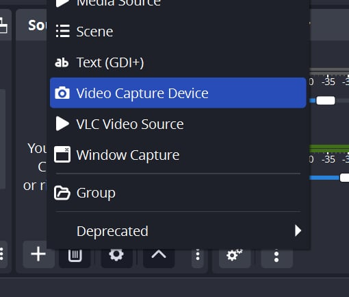
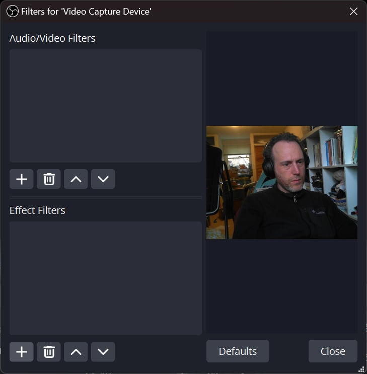
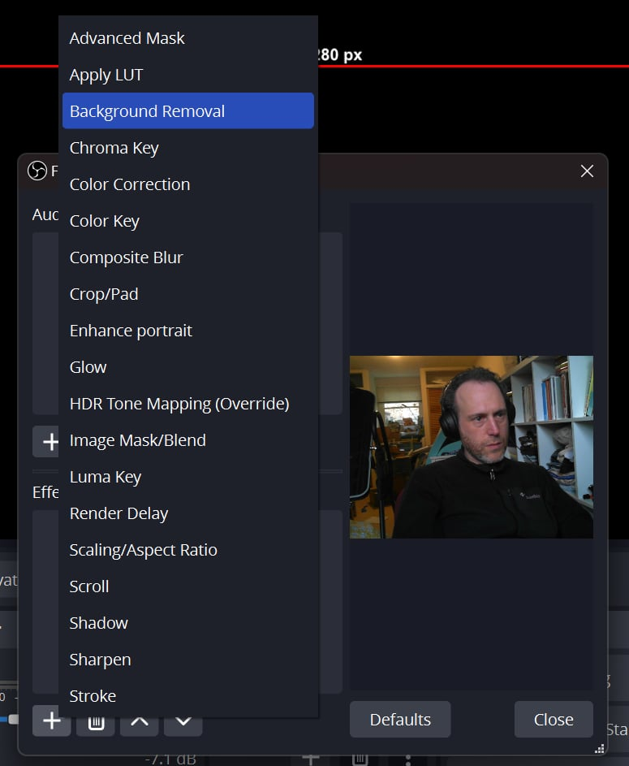
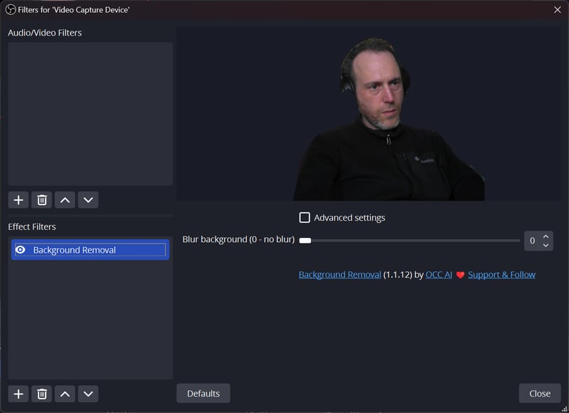
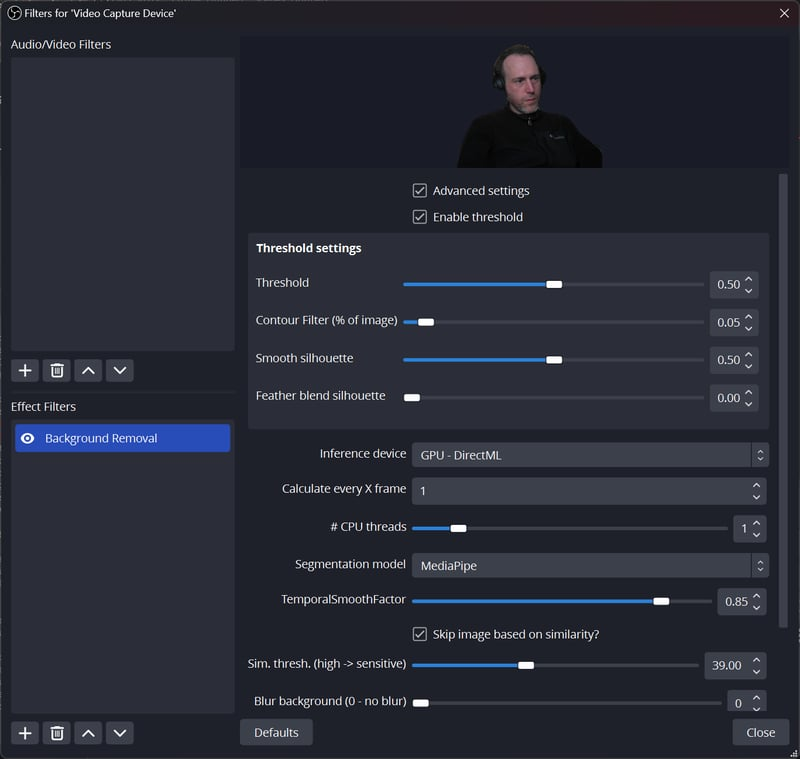

How to Use OBS Background Removal
- Start OBS Studio.
-
Add a Source:
Add a video capture source (such as your webcam), or any source that provides an image (Video, Image, Media, Browser, Screen Capture, etc.).
-
Open Filters:
Right-click your source and select Filters.
-
Add the Background Removal Filter:
Under Effect Filters, click the + button and select Background Removal.
If you don't see the filter, the installation may have failed or your OBS version may not be compatible. -
Adjust Filter Settings:
Tweak the filter settings to get the best result.
For advanced options, click Show Advanced Settings:

Tips for Best Results
- Use a good camera and ensure your lighting is bright and even.
-
Mediapipe model: Fastest, but lower accuracy. Set the threshold
low (e.g.,
0.05) to capture your whole portrait. - Robust Video Matting (RVM) model: Highest accuracy and least flickering, but slower.
- TCMonoDepth: Depth estimation model for portrait segmentation or "Depth of Field" blur. See the tutorial/preview.
- RMBG model: General background removal for any object, not just humans. See the tutorial/preview.
Watch our tutorial video here.
All set!